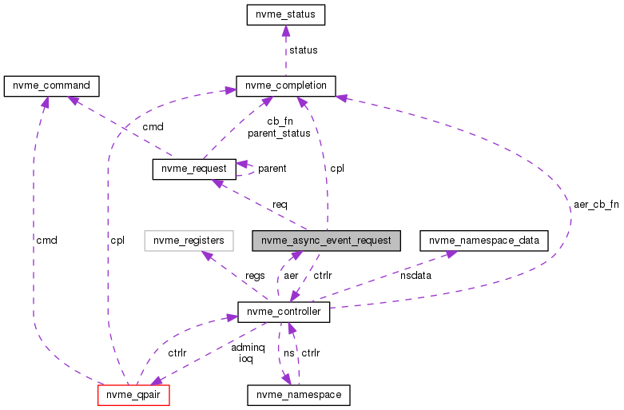

SPDK Userspace NVMe Driver
Main Page
Related Pages
Data Structures
Files
Data Structures
Data Structure Index
Data Fields
nvme_async_event_request Struct Reference
Collaboration diagram for nvme_async_event_request:

[
legend
]
The documentation for this struct was generated from the following file:
nvme_internal.h